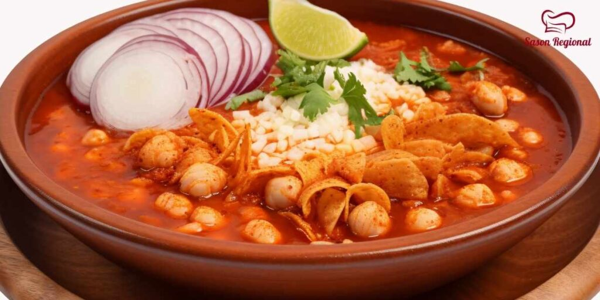

Pozole rojo recipe

Description
Pozole is a traditional Mexican soup that is full of different flavors, loved by many, and is consumed year-round
Ingredients
- 2 pounds of pork
- 6 guajillo chiles
- 1 can of hominy
- 6 cloves of garlic
- 1 tomato
- Salt and pepper to taste
- 1/2 onion
- 1 teaspoon of oregano
- 1 teaspoon of cumin
- 2 bay leaves
Steps
- Cook the pork meat in sufficient water (ensuring that the pork is completely covered with an inch or two to spare)
with 1 clove of garlic, 1/4 piece of an onion (not diced), the bay leaves, salt and pepper.
Set aside 1/2 cup of the broth from cooking the pork.
-
Once the meat is cooked through, remove the bay leave, onion, and garlic clove,
and add the hominy and bring to a boil for 15 minutes.
-
Prepare the guajillo chilies by removing the seeds and stem and boiling in water for 5-7 minutes or until soft.
Set aside for the next step.
-
Blend the remaining 5 cloves of garlic, the guajillo chilies, the tomato, another 1/4 piece of the onion, the cumin, the salt, the pepper, the 1/2 cup of broth that was set aside in step 1 above,
and 1/2 cup of hominy (to thicken the sauce) in a blender until completely blended.
-
Once the above mixture is blended, strain the mixture and add the strained liquid to the boiling
pot with the pork and water.
Season with oregano and add salt to taste
-
Let boil 15 minutes longer.
-
Serve hot, topped with chopped lettuce, onions, radishes, and a few drops of lime and finally the homemade tortilla chips